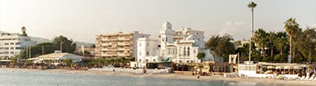
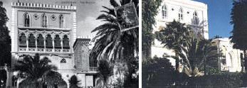
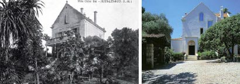
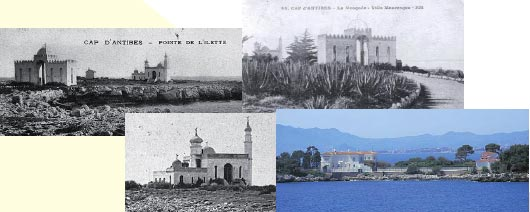

Le patrimoine contemporain - L'architecture - Néo-Mauresque
Ce style d’architecture est représenté sur le territoire de la CASA par de grandes demeures construites à la fin du XIXe siècle, début du XXe siècle. Le style néo-mauresque s’inspire, sur les façades extérieures de l’architecture orientale avec des ornementations de type coupole, dôme, baies ou encore tour minaret.
Monument historique
Inscrit le 01.09.1999
LABEL XXE SIÈCLE
Villa El Djézaïr - Antibes (Juan-les-Pins)
Une des maisons néo-mauresques les plus homogènes et les mieux conservées de la Côte-d’ Azur, construite en 1922 par l’architecte cannois Ernest Truch. La maison juxtapose 6 ou 7 volumes aux formes, couvertures et élévations très variées. L’unité est apportée par les références orientalistes : tour-minaret, coupoles et dômes, terrasses bordées de créneaux et merlons, ouvertures outrepassées, moucharabieh, ... La salle à manger est couverte d’une coupole sur pendentifs à décor arabisant. Le jardin est planté d’essences exotiques. Cet édifice est actuellement laissé à l’abandon et devrait faire l’objet d’une remise en état afin de ne pas perdre l’une des architectures de style néo-mauresque d’époque.

Château de l’Aube, anciennement «Villa Mauresque» - Vallauris / Golfe-Juan
Anciennement appelée « Villa Mauresque » de par son style architectural d’inspiration orientale, le château de l’Aube est aujourd’hui une luxueuse copropriété. Construit au XIXe siècle, l’édifice est marqué par la forme et la disposition des baies et arcades ainsi que par les éléments remarquables tels que les corniches ouvragées et les pierres apparentes. Il fut lors de la première guerre mondiale, un lieu d’accueil pour les militaires convalescents. Son allée des cocotiers est légendaire...

Villa Chêne Roc - Antibes
Située entre le boulevard Baudoin et l’avenue Saint Barthélémy au Cap d’Antibes, cette maison a été construite vers 1880. Le peintre Brambilla y a réalisé le décor peint, signé et daté 1901. Le très célèbre Pablo Picasso a habité la villa en 1924. C’est sans doute l’architecte niçois Marcel Guilgot qui a effectué l’agrandissement de la Villa Chêne Roc, probablement en 1956. En effet, en se conformant au nouvel alignement du boulevard, il construit alors une dépendance de l’Hôtel Belles Rives sur la parcelle de la Villa Chêne Roc, à la demande de Boma Estène, propriétaire de la villa et gérant de l’Hôtel Belles Rives. Lors des travaux, Marcel Guilgot s’entendit avec l’architecte Lucien Stable, chargé d’édifier une dépendance de la Villa La Vigie, pour donner aux deux dépendances contiguës un aspect homogène. L’architecture est originale ; la villa se compose d’un rez-de- chaussée plus un étage et un autre sous les combles d’une toiture à forte pente. Le jardin conserve l’essentiel de son état d’origine, avec ses anciens oliviers, ses pelouses et plates-bandes bordées de rocailles et sa végétation semi-exotique. Le nouvel alignement sur le boulevard a contraint à un aménagement d’escaliers montant à la partie ancienne.

Villa La Mosquée de l’Ilette (devenue Villa La Sarrazine, Villa La Presqu’île de l’Ilette, actuellement Villa Aigue-Marine) - Antibes
Au début du XXe siècle avait été édifiée à la pointe du Cap d’Antibes une villa à l’architecture très mauresque. Les Antibois n’avaient pas hésité une seconde, pour eux, cette villa devint «La Mosquée» et le sentier le conduisant à la mer prit naturellement ce nom. En 1921, le peintre Henri Matisse vient s’y promener avec sa fille Marguerite et Henriette Darricarrère, et ils se photographient sur le site. Une de ces photos, montrant Matisse en djellaba devant la maison, est généralement donnée pour être située au Maroc. La Mosquée avait été bâtie par un officier de la marine en retraite, Juan de la Vernède, qui, à sa mort, fut inhumé sur la pointe de l’Ilette. Depuis, la villa a été rasée pour faire place à une magnifique demeure, mais le sentier a conservé son appellation «chemin de la Mosquée». La villa se composait de deux corps de bâtiments en équerre sur les côtés nord et ouest et d’un patio bordé d’arcades sur ses deux autres côtés. Un rez-de-chaussée de faible hauteur portait l’étage auquel donnait accès au nord un perron frontal et un porche. Celui-ci ouvrait sur une unique salle couverte en son centre par une coupole et qu’éclairaient au sud une vaste baie et sur ses longs côtés une série de fenêtres hautes et étroites. Deux tours rondes inégales en diamètre et hauteur, couvertes de bulbes revêtus de tuiles vernissées en écaille, flanquaient ce corps. Une autre tour de faible hauteur couverte d’un dôme cantonnait l’aile en retour. Toutes les élévations étaient enduites et blanchies et couronnées d’un parapet. Toutes les baies étaient en plein cintre avec un chambranle mouluré. Un mur couronné de créneaux en escalier, percé d’arcades en plein cintre, fermait le patio. La villa a été démolie lors de la construction de la Villa La Presqu’ île de l’Ilette.
